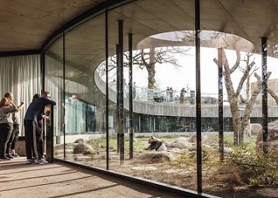
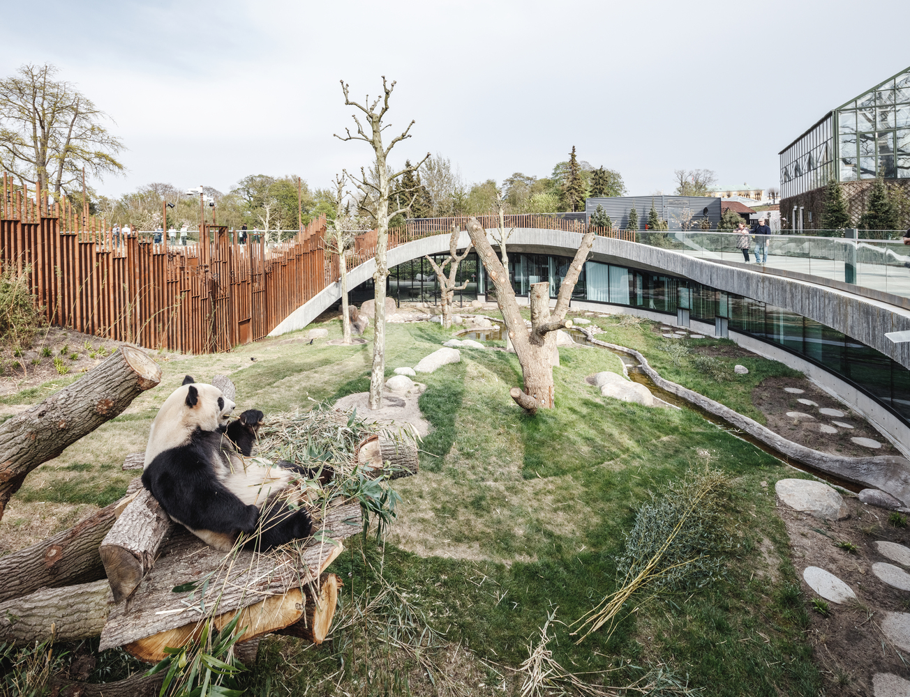
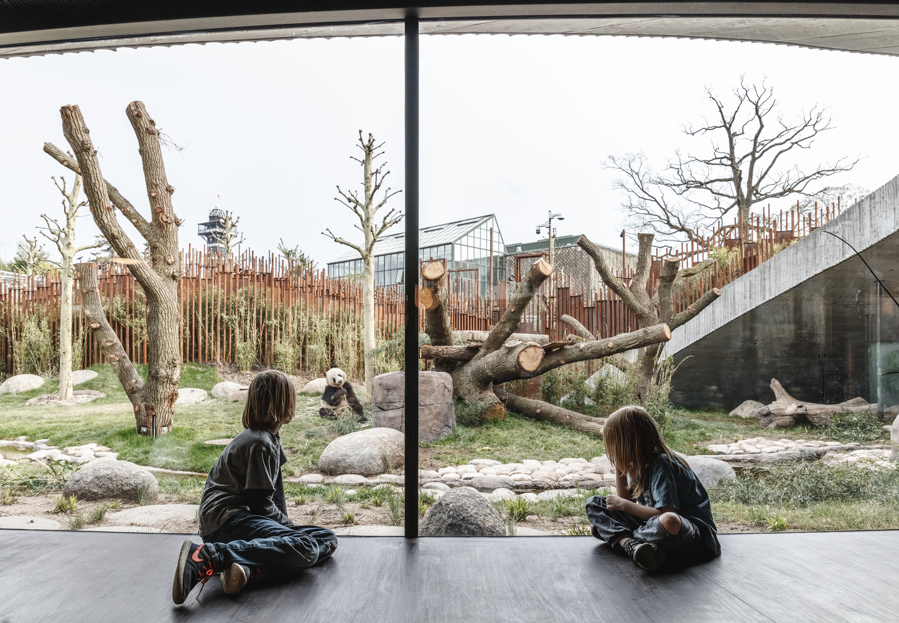
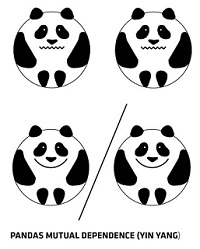

Panda House Observation Center
The home for giant pandas Mao Sun and Xing Er in Copenhagen Zoo resembles the panda’s natural habitat and creates a peaceful living environment for one of the world’s rarest mammals. The two giant pandas have settled in at Copenhagen Zoo since arriving from Chengdu, China. Anchoring one of the oldest zoos in Europe, the 2,450m2 Panda House creates a harmonious indoor-outdoor garden for the two pandas to roam freely and have the ideal conditions to mate—one of the major challenges facing the vulnerable species.
Masterplan
The Panda House is formed by its residents’ solitary nature and its immediate surroundings, including the central square, the Nordic area, the monkey house, and the elephant house. Mao Sun and Xing Er’s circular home is divided into two separate areas which appear as a yin and yang symbol, creating the freest and most naturalistic possible environment for the giant pandas’ lives and relationship with each other.
Landscape and architecture
Both pandas and guests hardly notice the separation; the enclosure is elevated to form stables and other facilities below ground, which simultaneously hides and integrates them into the landscape. By lifting the earth at both ends of the yin and yang symbol, an undulating landscape forms to allow direct views into the pandas’ habitat. The visitor experience happens along the perimeter of the round enclosure and in the paths that slope downward for insight into the work of the zoo staff, vets and gardeners.
The Panda House consists of two levels: a ground floor with the French-Asian bistro PanPan for visitors to dine while observing both the pandas and the elephants, and an upper floor with native Nordic plants and a path venturing into the dense bamboo forest. All interiors are designed to have the lush landscape at eye-level, creating an immersive experience with wildlife and nature at both sides. The vegetation and landscape at the Panda House closely mimic the pandas’ natural habitat with patches of bamboo scattered throughout. The pandas must be able to find both shade and sun, as well as water and foliage. By creating two forests – a dense, mist forest and a light green bamboo forest, Mao Sun and Xing Er have the opportunity and flexibility to explore both landscapes, according to the season, temperature and preference.
Architecture is like portraiture. To design a home for someone is like capturing their essence, their character and their personality in built form. In the case of the two great pandas, their unique solitary nature requires two similar but separate habitats.
"The curvy lines are undulating in section to create the necessary separation between him and her – as well as between them and us," he said. "Located at the heart of the park, we have made the entire enclosure accessible from 360 degrees, turning the two pandas into the new rotation point for Copenhagen Zoo."
BIG is an architecture practice founded by Danish architect Ingels in 2005, and has studios in Copenhagen, New York, London and Barcelona.